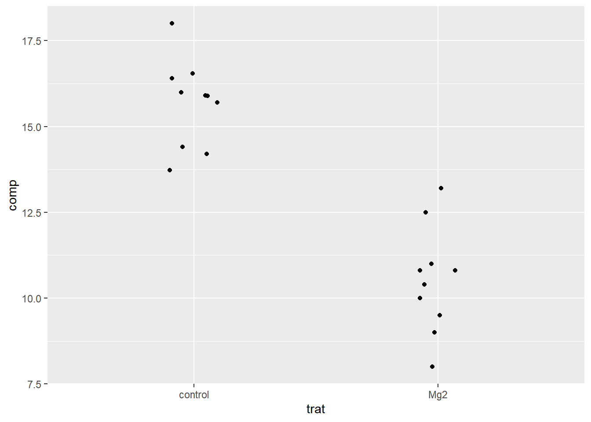

dat_mg <- gsheet2tbl("https://docs.google.com/spreadsheets/d/1bq2N19DcZdtax2fQW9OHSGMR0X2__Z9T/edit?gid=983033137")
ggplot(dat_mg, aes(trat, comp)) +
geom_jitter(width = 0.1)
dat_mg2 <- dat_mg |>
pivot_wider(names_from = trat, values_from = comp)
t_results <- t.test(dat_mg2$control, dat_mg2$Mg2, var.equal = FALSE)
report(t_results)Effect sizes were labelled following Cohen's (1988) recommendations.
The Welch Two Sample t-test testing the difference between dat_mg2$control and
dat_mg2$Mg2 (mean of x = 15.68, mean of y = 10.52) suggests that the effect is
positive, statistically significant, and large (difference = 5.16, 95% CI
[3.83, 6.49], t(17.35) = 8.15, p < .001; Cohen's d = 3.65, 95% CI [2.14, 5.12])p <- ggboxplot(dat_mg, x = "trat", y = "comp", color = "trat", palette = "jco")
test_df <- data.frame(group1 = "control", group2 = "Mg2", p.value = t_results$p.value, y.position = 18)
p + stat_pvalue_manual(test_df, label = "p.value") + ylim(0, 20)shapiro.test(dat_mg2$Mg2)
Shapiro-Wilk normality test
data: dat_mg2$Mg2
W = 0.97269, p-value = 0.9146shapiro.test(dat_mg2$control)
Shapiro-Wilk normality test
data: dat_mg2$control
W = 0.93886, p-value = 0.5404var.test(dat_mg2$Mg2, dat_mg2$control)
F test to compare two variances
data: dat_mg2$Mg2 and dat_mg2$control
F = 1.4781, num df = 9, denom df = 9, p-value = 0.5698
alternative hypothesis: true ratio of variances is not equal to 1
95 percent confidence interval:
0.3671417 5.9508644
sample estimates:
ratio of variances
1.478111